<!DOCTYPE html><html lang="en"></html><head><meta charset="utf-8"><title>reveal.js - The HTML Presentation Framework</title><meta name="description" content="A framework for easily creating beautiful presentations using HTML"><meta name="author" content="Hakim El Hattab"><meta name="apple-mobile-web-app-capable" content="yes"><meta name="apple-mobile-web-app-status-bar-style" content="black-translucent"><meta name="viewport" content="width=device-width, initial-scale=1.0, maximum-scale=1.0, user-scalable=no, minimal-ui"><link rel="stylesheet" href="css/reveal.css"><link id="theme" rel="stylesheet" href="css/theme/black.css"><!-- Code syntax highlighting--><link rel="stylesheet" href="lib/css/zenburn.css"><!-- Printing and PDF exports--><link rel="stylesheet" href="extra-css.css"><script>var link = document.createElement( 'link' );
link.rel = 'stylesheet';
link.type = 'text/css';
link.href = window.location.search.match( /print-pdf/gi ) ? 'css/print/pdf.css' : 'css/print/paper.css';
document.getElementsByTagName( 'head' )[0].appendChild( link );</script><!--if lt IE 9script(src='lib/js/html5shiv.js')
--></head><body><div class="reveal"><!-- Any section element inside of this container is displayed as a slide--><div class="slides"><section><h2>Builds are people too</h2><div><p>Presentation by Jake Ouellette (@Jakeout)</p></div></section><section><p>Builds</p><div class="fragment replaceafter2"></div><div class="fragment replaceafter2"></div><div class="fragment replaceafter2"></div><div class="fragment replaceafter2"></div><aside class="notes"><p>this is a talk about your development environment</p><p>Specifically, all the code you write in tools like maven, gradle, ant, rake, etc... </p><p>that power making your application</p><p>But those development environements are created by you</p><p>And those choices directly impact your user: your teammates.</p></aside></section><section><p>About me</p><aside class="notes"><p>I'm Jake Ouellette, I work @ Twitter on fabric</p></aside></section><section><p>Fabric</p><aside class="notes"><p>What have I built?  I work at Twitter, on Twitter's Mobile platform, fabric. </p><p>Fabric is a suite of Mobile SDKs which developers use to enhance their application</p><p>One example build tool is Crashlytics.</p></aside></section><section><p>crashlytics</p><aside class="notes">Crashes as a service.</aside></section><section><p>crashes-as-a-service</p></section><section><div style="width:300px;margin: 0 auto;"><span style="text-align:left;">com.jakeout<strong class="fragment replaceafter2">.Loader.load()</strong><strong class="fragment replaceafter2">.a.b()</strong><strong class="fragment">.Loader.load()</strong></span></div></section><section><div class="fragment replaceafter2"></div><aside class="notes"><p>And this is solved by a developer tool.</p><p>I have had a lot of opportunities to look at people's build scripts</p></aside></section><section><p class="fragment replaceafter">"big data"</p><p class="fragment">"big build"</p><aside class="notes"><p>The amount of data software organizations have available is increasing dramatically</p><p>But you know what else increases over time?</p><p>The complexity of the way they build their software</p></aside></section><section><div class="fragment replaceafter2"></div><div class="fragment replaceafter2"></div><aside class="notes"><p>When you first start a project, you make the best build ever</p><p>you understand it -- makes total sense to you</p></aside></section><section><div class="fragment replaceafter2"></div><div class="fragment replaceafter2"></div><div class="fragment replaceafter2"></div><div class="fragment replaceafter2"></div><aside class="notes"><p>Over time, you add more and more people to your team</p><p>And all of these people work in your build</p></aside></section><section><div class="fragment replaceafter2"></div><div class="fragment replaceafter2"></div><div class="fragment replaceafter2"></div><aside class="notes"><p>As more engineers join, they add more "stuff"</p><p>slows down the build, from your perspective</p><p>Maybe the second line shows the effort to fix it</p><p>So the build might not be that complex, but the effort increases exponentially</p></aside></section><section><div class="fragment replaceafter2"></div><div class="fragment replaceafter2"></div><aside class="notes"><p>A new engineer joins...</p><p>code has always been that way.</p><p>Build's health is down</p></aside></section><section><aside class="notes"><p>And they go to compile, and suddenly have to wait</p></aside></section><section><div class="fragment replaceafter2"></div><aside class="notes"><p>And to them, it's seriously always been this way</p><p>And not their responsibility to fix it</p></aside></section><section><p>Overview</p><aside class="notes"><p>What causes a big build</p><p>Strategies to prevent it.</p></aside></section><section><p>What causes a complicated build?</p></section><section><strong>Width of the project</strong></section><section><aside class="notes"><strong>what artifacts?</strong><ol><li>I have some projects where I might be building a thing</li><li>But that's a small part of a bigger thing, in order to build that thing, I have to build the whole project</li><li>and worse: some dependencies might be external in some way: not in my codebase, even if I am building it</li></ol></aside></section><section><p>Wasting your time</p><aside class="notes"><p>You spend a bunch of time building things you don't care about</p></aside></section><section><div class="fragment replaceafter2"></div><div class="fragment replaceafter2"></div><div class="fragment replaceafter2"></div><div class="fragment replaceafter2"></div><div class="fragment replaceafter2"></div><div class="fragment replaceafter2"></div><div class="fragment replaceafter2"></div><div class="fragment replaceafter2"></div><div class="fragment replaceafter2"></div><aside class="notes"><p>TODO: Could break your build down into small parts</p><p>TODO: Complexity of changing two things at once</p><p>what do I do if there's something I need to change in this external dependency? </p><p>That might be logical, it might just be my feature is wide</p><p>incremental builds</p><p>TODO: image here. Problem can be in tests, not in builds</p><p>if you do split them apart, can make versioning more confusing</p></aside></section><section><strong>Dependency hell</strong></section><section><div class="fragment replaceafter2"></div><div class="fragment replaceafter2"></div><div class="fragment replaceafter2"></div><div class="fragment replaceafter2"></div><div class="fragment replaceafter2"></div><div class="fragment replaceafter2"></div><div class="fragment replaceafter2"></div><aside class="notes"><p>Might have an artifact with a dependency, represented through transitives</p><p>Using a dependency for a transitives</p><p>If it is removed:</p><p>have to find what broke your build</p></aside></section><section><div class="fragment replaceafter2"></div><div class="fragment replaceafter2"></div><div class="fragment replaceafter2"></div><div class="fragment replaceafter2"></div></section><section><div class="fragment replaceafter2"></div><aside class="notes"><p>TODO: explicit vs implicit</p><p>TODO: projects and modules</p><ol><li>so that artifact</li><li>has direct dependencies</li><li>and those dependencies have dependencies</li><li>and you start to get the question: Should I even be referencing the transitives</li><li>I just want to call out the two archetypes of transitives: Internal to the project, and external. </li><p>Internal: e.g., packaged subproject, model code in separate package</p><p>External: Open source library, shared lib. Updating impacts multiple projects.</p><p>What do you do: only use transitives that are internal or directly referenced</p></ol></aside></section><section><strong>Disorganized builds</strong></section><section><p>Some projects are monorepos, everything depends on everything else in the same project</p></section><section><p>Some projects monorepos are based on artifacts:</p><p>One artifact triggers another to get installed, and uses that</p></section><section><p>But some projects, all the sub projects are used in a bunch of projects, so they are versioned.</p></section><section><strong>Spaghetti builds</strong></section><section><div class="fragment replaceafter2"></div><div class="fragment replaceafter2"></div><div class="fragment replaceafter2"></div><div class="fragment replaceafter2"></div><div class="fragment replaceafter2"></div><div class="fragment replaceafter2"></div><div class="fragment replaceafter2"></div><div class="fragment replaceafter2"></div><div class="fragment replaceafter2"></div><div class="fragment replaceafter2"></div><aside class="notes"><strong>where is it being built?</strong><ol><li>Where is it being built?</li><li>Might be in a subfolder</li><li>or a sub-sub-folder</li><li>And code debt over time might contribute, you might be better off moving it, then you have to teach everyone historical reasons for names</li><li>Sometimes you're getting artifacts from the internet</li><li>And occasionally, it could be an open source project closely tied to your work, and so you're dogfooding your stuff when it could live locally</li><li>Sometimes, you need to trigger a separate build to install an artifact</li><li>And that build could just be living in your project, but for some circumstance, isn't</li><li>Sometimes, folder structures get weird, and you have to symlink in a folder</li><li>Sometimes you even have to build a thing and manually copy it to a place, and it starts to feel like spaghetti code.</li></ol></aside></section><section><strong>Building multiple ways</strong></section><section><div class="fragment replaceafter2"></div><div class="fragment replaceafter2"></div><div class="fragment replaceafter2"></div><div class="fragment replaceafter2"></div><div class="fragment replaceafter2"></div><div class="fragment replaceafter2"></div><div class="fragment replaceafter2"></div><div class="fragment replaceafter2"></div><div class="fragment replaceafter2"></div><aside class="notes"><strong>how is it being built?</strong><ol><li>So you might have a clientside project</li><li>Oftentimes, you're building it within an IDE</li><li>but maybe another employee uses vim / command line builds</li><li>and maybe you have a CI machine on a mac mini building it too</li><li>One of the issues I've encountered is a lack of uniformity in builds can be a detriment. Many people use docker, but not in Production</li><li>So you get build differences between different contexts</li><li>might solve with a single build</li><li>might lose incremental compilation</li></ol></aside></section><section><strong>Organic buildscript reuse</strong></section><section><div class="fragment replaceafter2"></div><div class="fragment replaceafter2"></div><div class="fragment replaceafter2"></div><div class="fragment replaceafter2"></div><div class="fragment replaceafter2"></div><aside class="notes"><strong>who uses the build scripts?</strong><ol><li>Let's say you have a buildscript</li><li>If a coworker needs one for a new project, often they'll take yours</li><li>Ant lacks idioms, and so maybe, there was only one ant script ever written?</li><li>And what do you do if this happens across your organization? Everyone cutting and pasting from builds. There's a lot of repetition of knowledge</li></ol></aside></section><section><div class="fragment replaceafter2"></div><div class="fragment replaceafter2"></div><div class="fragment replaceafter2"></div><aside class="notes"><ol><li>So yeah, if you have a build that other scripts are reusing</li><li>One way to think about complexity is how many non project-specific things can be shared</li></ol></aside></section><section><strong>Untracked build steps</strong></section><section><div class="fragment replaceafter2"></div><div class="fragment replaceafter2"></div><div class="fragment replaceafter2"></div><div class="fragment replaceafter2"></div><div class="fragment replaceafter2"></div><aside class="notes"><strong>why does the build work?</strong><ol><li>Even when people are building the same *way*, sometimes someone does something custom locally (e.g., a script to make executing the build locally simpler)</li><li>and others don't have that custom script</li><li>I've even seen this on CI, where someone SSHs into a CI box and manually changes things, it isn't in a git repo, and is ephemeral setup</li><li>not documented anywhere, so other box wouldn't know</li><li>It'd be better if there were one thing both boxes could reuse.</li></ol></aside></section><section><p>OK!</p><aside class="notes"><p>OK! that's why your build in complicated.</p></aside></section><section><p>But... when do I fix it?</p></section><section><div class="fragment replaceafter2"></div><div class="fragment replaceafter2"></div><aside class="notes"><ol><li>immediately?</li><li>eventually?</li></ol></aside></section><section><div class="fragment replaceafter2"></div><div class="fragment replaceafter2"></div><div class="fragment replaceafter2"></div></section><section><div class="fragment replaceafter2"></div><div class="fragment replaceafter2"></div><div class="fragment replaceafter2"></div></section><section><div class="fragment replaceafter2"></div><div class="fragment replaceafter2"></div><div class="fragment replaceafter2"></div><div class="fragment replaceafter2"></div><div class="fragment replaceafter2"></div><div class="fragment replaceafter2"></div><div class="fragment replaceafter2"></div><div class="fragment replaceafter2"></div><div class="fragment replaceafter2"></div><aside class="notes"><p>Feature teams exist, but across features, can't</p><p>easily pay down wide debts</p><p>Devs end up solving them on their own</p><p>Instead, guilds own work, but then work is poorly tracked</p><p>We track work for Crash and answers, not for android</p><p>Where do you document this work?</p></aside></section><section><p>TODO: ephemeral-teams: Spin off when needed</p></section><section><aside class="notes"><strong>team structure changes</strong><p>Teammates added</p><p>Before they start the build, reason about anything hacky </p><p>Teammates enter: Dogfood your build</p><p>They MUST update any errors</p><p>They must give you feedback</p><p>Avoid ephemeral artifacts that get out of date..</p><p>Train them on norms of the build:</p><p>Creating a new project</p><p>Don't let them learn from your mistakes.</p></aside></section><section><aside class="notes"><p>Teammates leave</p><p>Intellij run configs commitable, CI matching way you build locally,</p><p>minimize feature switches</p><p>Walk through with them their domain knowledge of the build. What</p><p>Weird scripts have they built locally we need to get into master?</p><p>What isn't automated you thought was </p></aside></section><section><p>Products ship</p><aside class="notes"><p>Product shipping provide a moment to reflect, but you have to be careful</p><p>not to break the build immediately after shipping</p><p>Avoid introducing risk close to a ship date by planning out how major releases are being deployed, early</p></aside></section><section><p class="dimafter">Products shipping as reflection</p><p class="dimafter">Products shipping as prioritization of ephemeral-teams</p></section><section><p>Projects spin up</p><aside class="notes"><p>Don't make massive changes to builds right before projects ship.</p><p>Plan and understand code debt your team is taking on. </p><p>Are the engs on the team trained to solve their build problems?</p><p>Does this new project have any unique impacts on the build?</p><p>Is this team reusing builds from other teams?</p><p>Now is NOT the time to copy all the existing build scripts</p><p>Put them in shared places and start using those in *both* projects</p><p>Anticipate the cost to spin up projects in terms of the debt to the system</p></aside></section><section><p>Architectures change</p><aside class="notes"><p>Whenever a system architecture changes, it's an opportunity to improve the build</p></aside></section><section><p>TODO: build tool build tools.</p></section><section><p>Conclusions</p><p class="fragment">Many reasons you get a big build</p><p class="fragment">Treat your builds with respect</p></section></div></div><script src="lib/js/head.min.js"></script><script src="js/reveal.js"></script><script>// Full list of configuration options available at:
// https://github.com/hakimel/reveal.js#configuration
Reveal.initialize({
controls: true,
progress: true,
history: true,
center: true,
transition: 'slide', // none/fade/slide/convex/concave/zoom
// Optional reveal.js plugins
dependencies: [
{ src: 'lib/js/classList.js', condition: function() { return !document.body.classList; } },
{ src: 'plugin/markdown/marked.js', condition: function() { return !!document.querySelector( '[data-markdown]' ); } },
{ src: 'plugin/markdown/markdown.js', condition: function() { return !!document.querySelector( '[data-markdown]' ); } },
{ src: 'plugin/highlight/highlight.js', async: true, callback: function() {
    [].forEach.call( document.querySelectorAll( '.highlight' ), function( v, i) {
        hljs.highlightBlock(v);
    });
} },
// { src: 'plugin/highlight/highlight.js', async: true, condition: function() { return !!document.querySelector( 'pre code' ); }, callback: function() { hljs.initHighlightingOnLoad(); } },
{ src: 'plugin/zoom-js/zoom.js', async: true },
{ src: 'plugin/notes/notes.js', async: true }
]
});</script></body>